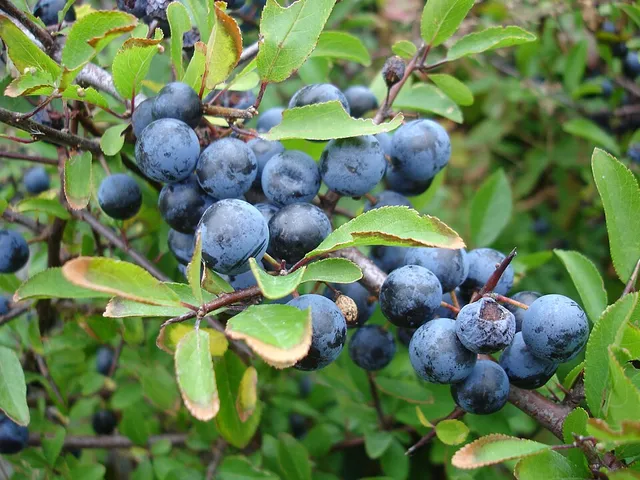
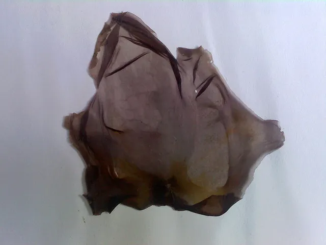
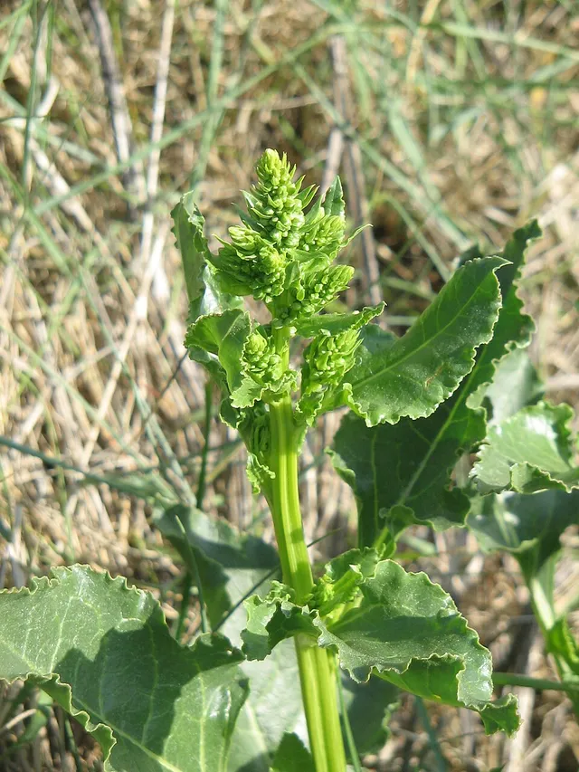

Wild food recipes from the UK
30 dishes made with foraged ingredients, from drinks and preserves to mains and desserts.
Drinks
 Elderflower cordialElderflower
Elderflower cordialElderflower
Sloe ginSloe Dandelion and burdockDandelion, Burdock root
Dandelion and burdockDandelion, Burdock root Rose hip syrupRose hips
Rose hip syrupRose hips Meadowsweet cordialMeadowsweet
Meadowsweet cordialMeadowsweet Gorse flower cordialGorse flowers
Gorse flower cordialGorse flowers Heather and honey teaHeather flowers
Heather and honey teaHeather flowers
Starters & snacks
- Elderflower frittersElderflower
 Moules marinièreBlue mussels
Moules marinièreBlue mussels Samphire with butterMarsh samphire
Samphire with butterMarsh samphire Rock samphire pickleRock samphire
Rock samphire pickleRock samphire Chanterelles on toastChanterelle
Chanterelles on toastChanterelle
Sauces, preserves & sides
 Wild garlic pestoWild garlic
Wild garlic pestoWild garlic Bramble jellyBlackberry, Crab apple
Bramble jellyBlackberry, Crab apple- Hedgerow jellyBlackberry, Rose hips, Sloe, Hawthorn, Crab apple
 Hawthorn ketchupHawthorn
Hawthorn ketchupHawthorn Rowan jellyRowan berries, Crab apple
Rowan jellyRowan berries, Crab apple Cherry plum jamCherry plum
Cherry plum jamCherry plum
Main course
 Nettle soupStinging nettle
Nettle soupStinging nettle
Laverbread with cockles and baconLaver
Sea beet and potato soupSea beet Chestnut and mushroom roastSweet chestnut
Chestnut and mushroom roastSweet chestnut Wild mushroom risottoPorcini, Hedgehog mushroom
Wild mushroom risottoPorcini, Hedgehog mushroom Sea purslane with sea bassSea purslane
Sea purslane with sea bassSea purslane
 Gooseberry foolWild gooseberry, Elderflower
Gooseberry foolWild gooseberry, Elderflower Bilberry pieBilberry
Bilberry pieBilberry Cranachan with raspberriesWild raspberry
Cranachan with raspberriesWild raspberry